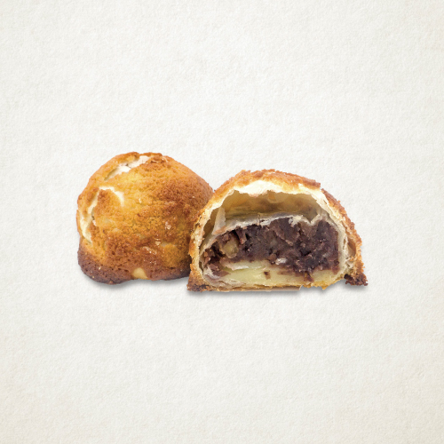

1/1
소보로
바삭 촉촉 기본에 충실한 성심당 [소보로]
겉면은 바삭, 속은 촉촉! 성심당 소보로. 고소한 땅콩버터의 풍미가 가득한 크런치한 비스킷이 올려진 고전적인 소보로. 특유의 촉촉함과 부드러움의 깊이가 남다른 소보로는 차가운 우유와 함께 드시면 고소한 맛이 살아나는 간편한 기본 간식빵입니다.※단체주문 추천빵
1,300원
유통기한
보관방법
배송비
사이즈
당일섭취 권장상품
직사광선을 피하고 서늘한 곳 보관
선불 3000원
10 * 10
같은 카테고리 인기 제품
알레르기정보
밀, 우유, 난류(가금류), 대두, 아몬드, 땅콩 함유/본 제품은 난류(가금류), 우유, 메밀, 아황산류, 대두, 토마토, 호두, 땅콩, 닭고기, 쇠고기, 밀, 새우, 돼지고기, 오징어, 잣을 사용한 제품과 같은 시설에서 제조하고 있습니다.
성분표시
강력(미국/캐나다) 박력(미국) 계란(국산)
매장지도 보기